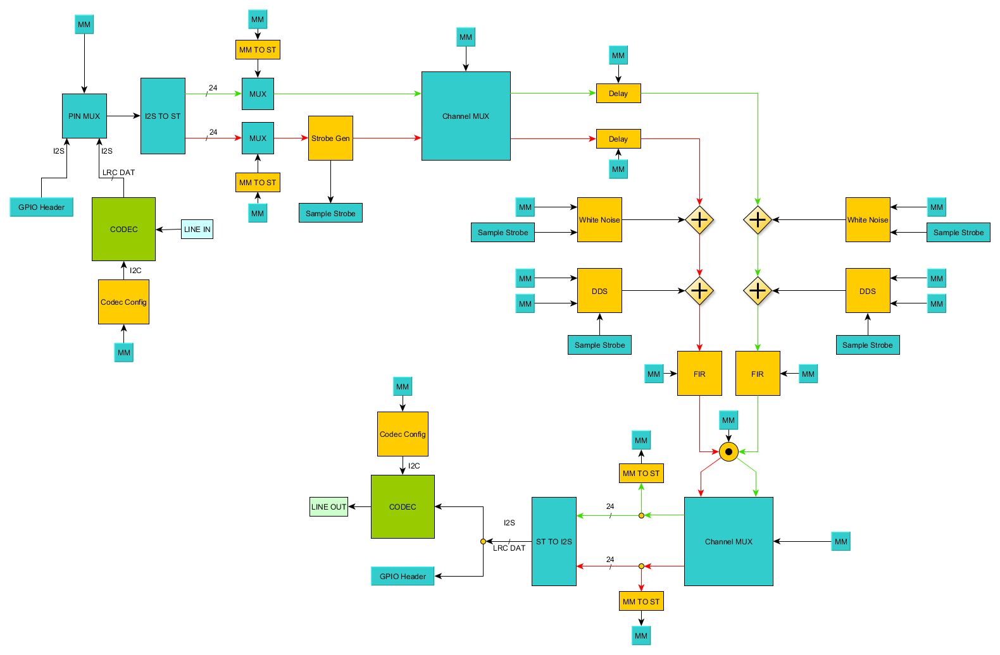

ASP-SoC
Wurm, Steinbacher, Steiger, Reisinger, Posch, Haberleitner
Created: 2018-02-07 Mit 11:54
1 Einführung
1.1 Motivation und Ziele
- Echtzeitverarbeitung
- Vielseitige Steuerungsmöglichkeiten durch GNU/Linux
- Keine CPU-Zeit im Betrieb nötig
1.2 Systemübersicht
- Kommunikation zwischen Linux und Signalverarbeitungsteil über Bridges
- Linux: Device Driver für jede konfigurierbare Komponente

2 Architektur
2.1 Audiocodec
integrierter Codec auf DE1-SoC Board: WM8731
 Konfiguration über I2C
Konfiguration über I2C
Daten über I2S
2.2 Kommunikation
Komponente zu Komponente: Avalon Streaming Bus
HPS und Komponente: Avalon Memory Mapped Bus
2.3 Platform Designer(Qsys)
Eindimensionale Verbindung der Komponenten
3 Beispiel-Plattform
3.1 Übersicht

3.2 GUI-Stack

3.3 Beispiel Channel-MUX
4 Fazit
4.1 Status & Aussicht
- Erste Blöcke bereits funktional
- Konzept & Workflow ausgearbeitet
- Erweiterung der DSP Blöcke
- Mögliche Erweiterung auf Videoverarbeitung